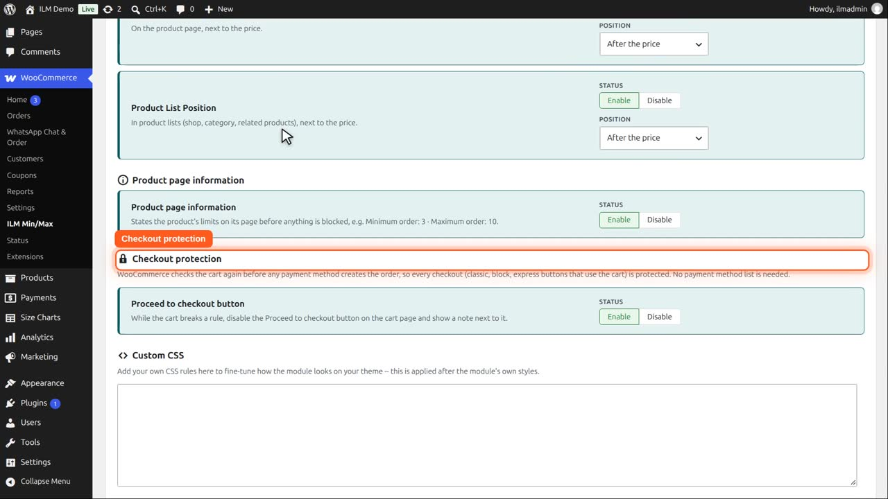
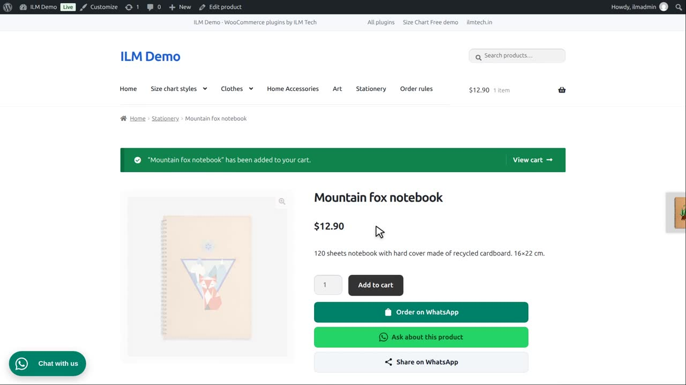
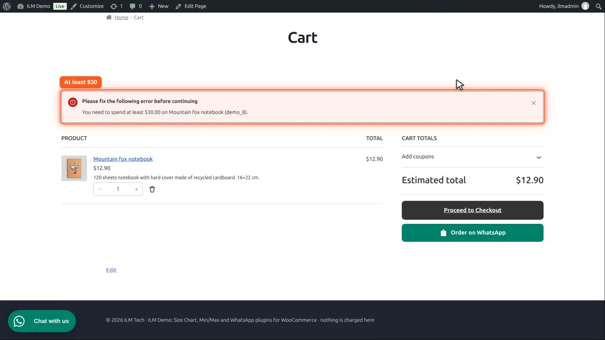

Pro add-on. This feature needs the Pro add-on. See Free and Pro.
WooCommerce checks the cart again before any payment method creates the order, so every checkout is protected. No list of payment methods is needed.
Checkout protection is on Configuration, Advanced. WooCommerce checks the cart again before any payment method creates the order, so every checkout is protected. No payment method list is needed.

Proceed to checkout button disables that button on the classic cart page while a rule is broken, and shows a note next to it. This shop uses the block cart, where the checkout page itself refuses the order.

Here the Mountain fox notebook needs thirty dollars, and the cart has twelve ninety.

When the customer goes on to checkout, the checkout page checks the rules first and shows the message. So a broken cart can never become an order.